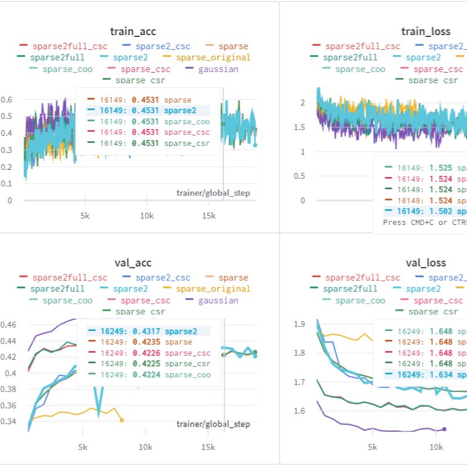

Course Project, Deep Learning and Applied AI
By fixing the architecture and the dataset we obtain the objective landscape for the optimization process, which is a space with 'D' dimensions, where 'D' is the number of parameters of our model.
We can take slices of this space and train our model in a subspace of 'd' dimensions. By doing this, the actual parameters will be in the subspace, from which we can project with a fixed random projection matrix to the full model parameters' space.
In this project we will see the performance of these networks.
Through these experiments a few limitations of this family of models were uncovered: high VRAM usage, high computational cost, lower performance. They have major implications in terms of the applicability of these models, since the only practical advantage is that by storing the seed of the random generation of P and the W parameters we can compress the model in storage.
We would still be able to efficiently perform the inference operations by calculating once and for all K = PW, but the resulting model would have lower performance than a model which was originally trained without projection. Also, training a model without projection is more cost-effective in terms of computational power.
Although it’s not the kind of model that we could deploy in production, the theoretical results are interesting. We can explore subspaces to infer the difficulty of a task based on the dataset and the model architecture, and make comparisons by seing how efficient they are in the use of their parameters.
We can also test different values of lower dimensions for each layer of the network and see the impact on the training process. Depending on the amount of parameters involved, we would need to change the projection method by sacrificing some model performance, but since it may not be the focus of the study it may still be worth it for the investigation of model architectures.
More details can be found in the Project Report and the Weights & Biases Report.